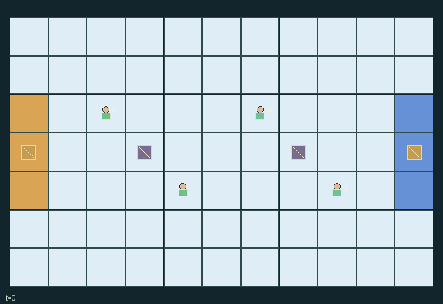

GI143 · Crosswake Ice Doubles

Two teams contest two neutral stones. Entering the right goal (x=10,y=2..4) scores team 0; entering the left goal (x=0,y=2..4) scores team 1, regardless of last pusher.
Identity and original contract
4 independently actionable roles; 10 discrete commands per role; 125 native observation columns per role; original horizon 72 steps. Declared per-step reward range: -2.03 to 2.0. Observation regime: fully_observable.
Source SHA-256: a9e23750216fa0e669c68ed604257fe7fdfd19471f184f14724da6ba2d4de6c6
The objective, rewards, population, map and horizon remain original. A preview is not a success claim.
Objective and gameplay
Two teams contest two neutral stones. Entering the right goal (x=10,y=2..4) scores team 0; entering the left goal (x=0,y=2..4) scores team 1, regardless of last pusher.
Teammates and opponents can redirect or brake the same stone, cancel conflicting pushes, or occupy its future endpoint. These changes persist through bounded momentum and alter subsequent scoring opportunities.
- Two neutral stones start at (3,3) and (7,3). Right goal cells score team 0; left goal cells score team 1.
- Players move one cell. Other players old cells, current active stones and contested destinations block movement; swaps are rejected.
- A push costs two energy and targets the lowest-index adjacent active stone. Brake costs one energy. Wait recovers one energy, capped at four.
- Push vectors are summed. The strictly stronger absolute axis determines direction; an axis tie cancels motion. Same-axis opposite forces can cancel.
- Any brake on a stone overrides all pushes. Otherwise a push sets up to three one-cell movements including the current call.
- Stones move at most one cell per call. Boundaries, player endpoints, another active stone old cell or duplicate stone endpoints stop them.
- Contact costs the hit player one energy. A stone never passes through a player or another current stone cell.
- Friction removes one movement count per call. Direction becomes zero at rest. Goal entry removes that stone and emits a real score event.
- Each teammate receives own team goals minus other team goals; control actions also cost 0.01 per energy spent. Play ends after both stones score or at 72 calls.
Ending: Both stones have entered goals and become inactive. Horizon 72 truncates otherwise, with natural completion priority.
What this game explores
Joint transport & shared access: Positions, load geometry, occupancy and persistent access constrain whose action can succeed next. Distinguish physical handoff, shared controls and simultaneous force from a cosmetic cooperation label.
Team opposition & interception: Cooperation within a team can coexist with opposition between teams. Preserve team membership, capture and possession rules, and report each team's outcomes instead of assuming a single shared return.
These are questions supported by rule structure, not observed learning effects.
Play it: operating walkthrough
crucibles play --game gi143Keep Python running and open its printed address. Select this game, set a seed and press Create session. The game itself is always English.
Assign a role range to Host with Assign / take over, or Assign all roles. Invite a second participant with Create player invitation, then assign a disjoint subset. Every original role is available.
For every owned role choose a legal command and press Queue. Arrow keys / WASD queue a declared directional action for the current role camera when available. Space or Advance one joint step advances everyone together. Non-directional games use the selectors.
Unqueued roles use the labelled untrained uniform-legal policy. Take over or release roles before the next step without resetting. Full-state debug is privileged and permanently logged; role cameras preserve permissions. Close the session to retain logs. Server restart does not restore sessions.
Complete command reference
IDs and English labels exactly match the manifest. Availability depends on role, resources, location and phase. An available action can still have no productive effect.
0·Wait and recover one energy
1·Move north
2·Move east
3·Move south
4·Move west
5·Push adjacent stone north
6·Push adjacent stone east
7·Push adjacent stone south
8·Push adjacent stone west
9·Brake adjacent stone
Roles and capability identifiers
These original role names describe capabilities, not interchangeable skins. Check each owned role's legal selector before planning handoffs.
agent_0·Team 0 west striker
agent_1·Team 0 redirecting partner
agent_2·Team 1 east striker
agent_3·Team 1 intercepting partner
Information and observation permissions
All agent positions/energy, stone endpoints/directions/durations/activity, terrain, public event flags and team scores are public. Own role is one-hot. Goal centers are fixed landmarks; the actual goal mouth is the three terrain cells.
The GIF is full-state debug and may reveal hidden entities or private state. Train on obs[agent], not the picture, state tree or another role's private row. Field slices and visibility are in the original manifest.
Reinforcement-learning integration
import jax
from crucibles_jaxmarl import make
env = make("gi143")
key = jax.random.PRNGKey(0)
key, rk, ak, sk = jax.random.split(key, 4)
obs, state = jax.jit(env.reset)(rk)
actions = env.sample_actions(ak, state)
obs, state, rewards, dones, info = jax.jit(env.step_env)(sk, state, actions)
done = dones["__all__"]Observations are float32 vectors of width 125; actions are scalar int32; masks have 10 entries. Supply all 4 roles each transition. Masked sampling is an engineering reference, not a trained learner.
step_env retains terminal data without reset. step performs outer autoreset and keeps terminal data in info["raw_state"] and info["raw_observation"]. Use dones["__all__"] for episode boundaries; separate completion, failure and time limit in analysis.
JIT or vmap equal identities and shapes. Split independent reset, policy and transition keys. Group different shapes explicitly; do not shrink the population or horizon. Host rendering stays outside training.
Training questions and fair evaluation
Define valid completion from the objective before fitting. Preserve original rewards and also report real deliveries/services, losses, resource state, unresolved episodes and per-role returns. Animation is not a reward signal.
Positions, load geometry, occupancy and persistent access constrain whose action can succeed next. Distinguish physical handoff, shared controls and simultaneous force from a cosmetic cooperation label.
Cooperation within a team can coexist with opposition between teams. Preserve team membership, capture and possession rules, and report each team's outcomes instead of assuming a single shared return.
Compare memory, communication or centralized critics under matched actor information. Declare critic access; keep actor inputs role-filtered. Match partner/opponent distributions, masks, compute and checkpoint selection. Final tests never enter fitting or selection.
Independent training runs or source-pairing blocks are inferential units; episodes from one policy are not independent training replications. Save hashes, keys, versions, device, time and cost. Negative, zero, failed and indeterminate outcomes are valid. No trained checkpoint or target score is supplied.
Classification and evidence
Overlapping editorial labels are reading aids, not proof of novelty, difficulty, strategic equivalence or learning effects.
- Joint transport & shared access
- Evidence
manifest.task.objective: Two teams contest two neutral stones. Entering the right goal (x=10,y=2..4) scores team 0; entering the left goal (x=0,y=2..4) scores team 1, regardless of last pusher.
- Team opposition & interception
- Evidence
manifest.task.objective: Two teams contest two neutral stones. Entering the right goal (x=10,y=2..4) scores team 0; entering the left goal (x=0,y=2..4) scores team 1, regardless of last pusher.
- Evidence
manifest.task.interaction: Teammates and opponents can redirect or brake the same stone, cancel conflicting pushes, or occupy its future endpoint. These changes persist through bounded momentum and alter subsequent scoring opportunities.
- Evidence
manifest.task.observation_access: All agent positions/energy, stone endpoints/directions/durations/activity, terrain, public event flags and team scores are public. Own role is one-hot. Goal centers are fixed landmarks; the actual goal mouth is the three terrain cells.
Source, receipts and preview limits
The world-only English GIF replays saved untrained legal actions through the original kernel. At most 25 actual endpoints include initial and terminal state; no invented interpolation. It is full-state debug, not the role observation.
Original source, observation slices, manifest and mechanism
Native receipt · Presentation receipt
Engineering passes do not establish learning. Nonzero floating differences remain recorded and undetermined; no new tolerance was introduced. Human scores remain unverified.